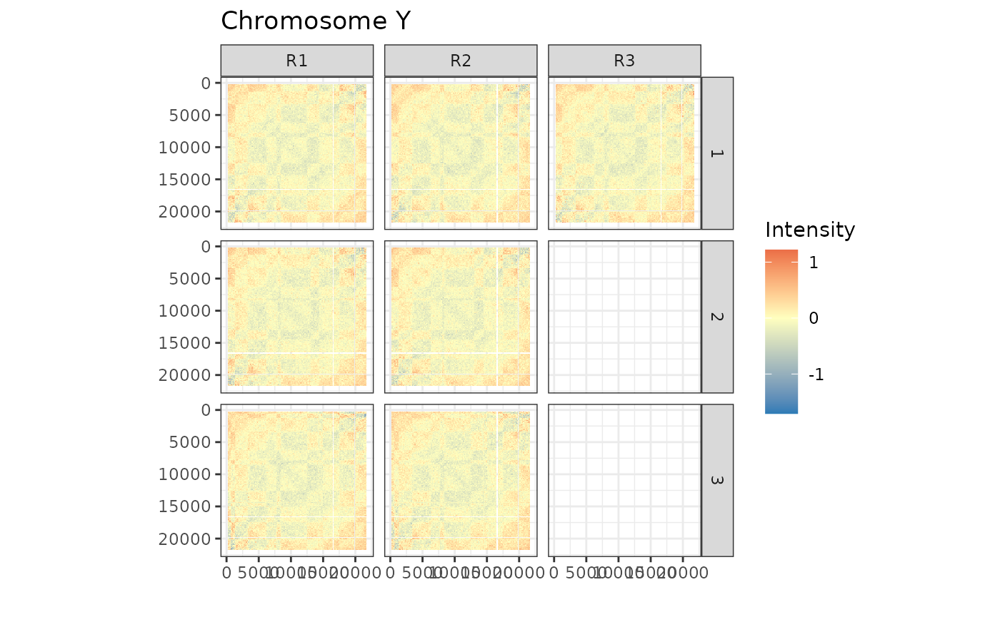
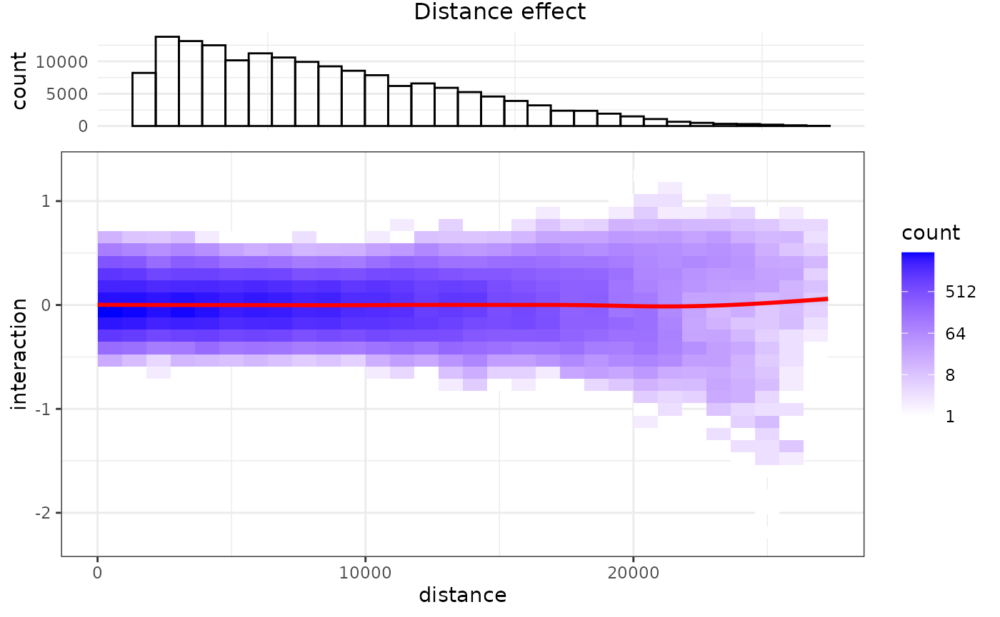
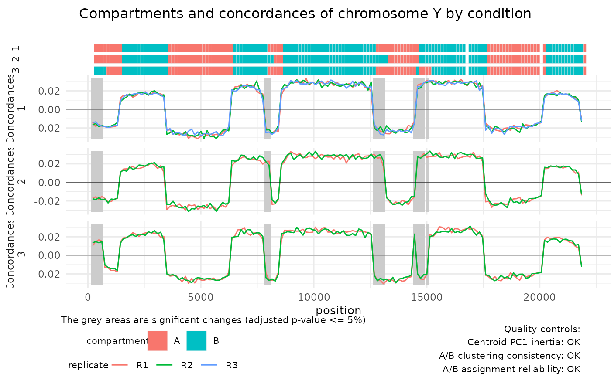
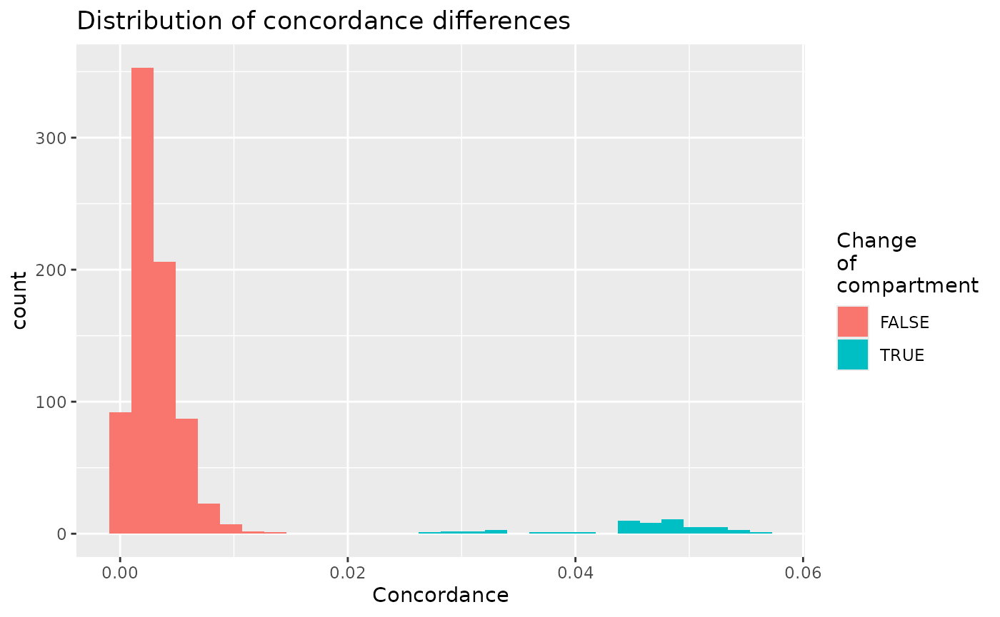
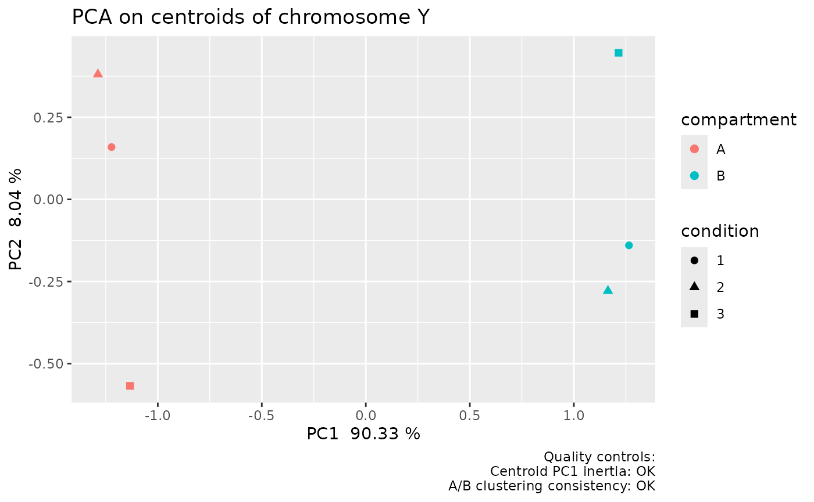
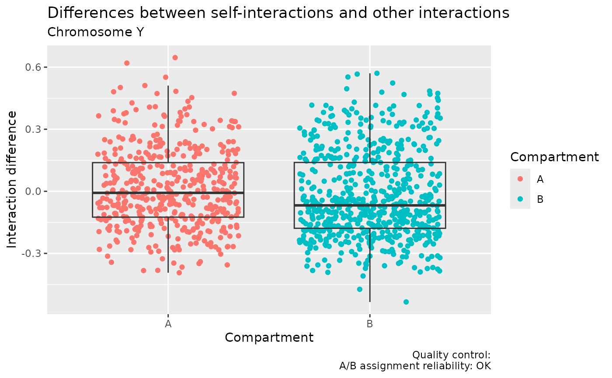

vignettes/HiCDOC.Rmd
HiCDOC.RmdThe aim of HiCDOC is to detect significant A/B compartment changes, using Hi-C data with replicates.
HiCDOC normalizes intrachromosomal Hi-C matrices, uses unsupervised learning to predict A/B compartments from multiple replicates, and detects significant compartment changes between experiment conditions.
It provides a collection of functions assembled into a pipeline:
HiCDOC can be installed from Bioconductor:
if (!requireNamespace("BiocManager", quietly=TRUE))
install.packages("BiocManager")
BiocManager::install("HiCDOC")The package can then be loaded:
library(HiCDOC)
#> Loading required package: InteractionSet
#> Loading required package: GenomicRanges
#> Loading required package: stats4
#> Loading required package: BiocGenerics
#> Loading required package: generics
#>
#> Attaching package: 'generics'
#> The following objects are masked from 'package:base':
#>
#> as.difftime, as.factor, as.ordered, intersect, is.element, setdiff,
#> setequal, union
#>
#> Attaching package: 'BiocGenerics'
#> The following objects are masked from 'package:stats':
#>
#> IQR, mad, sd, var, xtabs
#> The following objects are masked from 'package:base':
#>
#> anyDuplicated, aperm, append, as.data.frame, basename, cbind,
#> colnames, dirname, do.call, duplicated, eval, evalq, Filter, Find,
#> get, grep, grepl, is.unsorted, lapply, Map, mapply, match, mget,
#> order, paste, pmax, pmax.int, pmin, pmin.int, Position, rank,
#> rbind, Reduce, rownames, sapply, saveRDS, table, tapply, unique,
#> unsplit, which.max, which.min
#> Loading required package: S4Vectors
#>
#> Attaching package: 'S4Vectors'
#> The following object is masked from 'package:utils':
#>
#> findMatches
#> The following objects are masked from 'package:base':
#>
#> expand.grid, I, unname
#> Loading required package: IRanges
#> Loading required package: Seqinfo
#> Loading required package: SummarizedExperiment
#> Loading required package: MatrixGenerics
#> Loading required package: matrixStats
#>
#> Attaching package: 'MatrixGenerics'
#> The following objects are masked from 'package:matrixStats':
#>
#> colAlls, colAnyNAs, colAnys, colAvgsPerRowSet, colCollapse,
#> colCounts, colCummaxs, colCummins, colCumprods, colCumsums,
#> colDiffs, colIQRDiffs, colIQRs, colLogSumExps, colMadDiffs,
#> colMads, colMaxs, colMeans2, colMedians, colMins, colOrderStats,
#> colProds, colQuantiles, colRanges, colRanks, colSdDiffs, colSds,
#> colSums2, colTabulates, colVarDiffs, colVars, colWeightedMads,
#> colWeightedMeans, colWeightedMedians, colWeightedSds,
#> colWeightedVars, rowAlls, rowAnyNAs, rowAnys, rowAvgsPerColSet,
#> rowCollapse, rowCounts, rowCummaxs, rowCummins, rowCumprods,
#> rowCumsums, rowDiffs, rowIQRDiffs, rowIQRs, rowLogSumExps,
#> rowMadDiffs, rowMads, rowMaxs, rowMeans2, rowMedians, rowMins,
#> rowOrderStats, rowProds, rowQuantiles, rowRanges, rowRanks,
#> rowSdDiffs, rowSds, rowSums2, rowTabulates, rowVarDiffs, rowVars,
#> rowWeightedMads, rowWeightedMeans, rowWeightedMedians,
#> rowWeightedSds, rowWeightedVars
#> Loading required package: Biobase
#> Welcome to Bioconductor
#>
#> Vignettes contain introductory material; view with
#> 'browseVignettes()'. To cite Bioconductor, see
#> 'citation("Biobase")', and for packages 'citation("pkgname")'.
#>
#> Attaching package: 'Biobase'
#> The following object is masked from 'package:MatrixGenerics':
#>
#> rowMedians
#> The following objects are masked from 'package:matrixStats':
#>
#> anyMissing, rowMediansHiCDOC can import Hi-C data sets in various different formats: -
Tabular .tsv files. - Cooler .cool or
.mcool files. - Juicer .hic files. - HiC-Pro
.matrix and .bed files.
A tabular file is a tab-separated multi-replicate sparse matrix with a header:
chromosome position 1 position 2 C1.R1 C1.R2 C2.R1 … Y 1500000 7500000 145 184 72 … …
The number of interactions between position 1 and
position 2 of chromosome are reported in each
condition.replicate column. There is no limit to the number
of conditions and replicates.
To load Hi-C data in this format:
hic.experiment <- HiCDOCDataSetFromTabular('path/to/data.tsv')To load .cool or .mcool files generated by
Cooler (Abdennur and Mirny 2019):
# Path to each file
paths = c(
'path/to/condition-1.replicate-1.cool',
'path/to/condition-1.replicate-2.cool',
'path/to/condition-2.replicate-1.cool',
'path/to/condition-2.replicate-2.cool',
'path/to/condition-3.replicate-1.cool'
)
# Replicate and condition of each file. Can be names instead of numbers.
replicates <- c(1, 2, 1, 2, 1)
conditions <- c(1, 1, 2, 2, 3)
# Resolution to select in .mcool files
binSize = 500000
# Instantiation of data set
hic.experiment <- HiCDOCDataSetFromCool(
paths,
replicates = replicates,
conditions = conditions,
binSize = binSize # Specified for .mcool files.
)To load .hic files generated by Juicer (Durand 2016):
# Path to each file
paths = c(
'path/to/condition-1.replicate-1.hic',
'path/to/condition-1.replicate-2.hic',
'path/to/condition-2.replicate-1.hic',
'path/to/condition-2.replicate-2.hic',
'path/to/condition-3.replicate-1.hic'
)
# Replicate and condition of each file. Can be names instead of numbers.
replicates <- c(1, 2, 1, 2, 1)
conditions <- c(1, 1, 2, 2, 3)
# Resolution to select
binSize <- 500000
# Instantiation of data set
hic.experiment <- HiCDOCDataSetFromHiC(
paths,
replicates = replicates,
conditions = conditions,
binSize = binSize
)To load .matrix and .bed files generated by
HiC-Pro (Servant 2015):
# Path to each matrix file
matrixPaths = c(
'path/to/condition-1.replicate-1.matrix',
'path/to/condition-1.replicate-2.matrix',
'path/to/condition-2.replicate-1.matrix',
'path/to/condition-2.replicate-2.matrix',
'path/to/condition-3.replicate-1.matrix'
)
# Path to each bed file
bedPaths = c(
'path/to/condition-1.replicate-1.bed',
'path/to/condition-1.replicate-2.bed',
'path/to/condition-2.replicate-1.bed',
'path/to/condition-2.replicate-2.bed',
'path/to/condition-3.replicate-1.bed'
)
# Replicate and condition of each file. Can be names instead of numbers.
replicates <- c(1, 2, 1, 2, 1)
conditions <- c(1, 1, 2, 2, 3)
# Instantiation of data set
hic.experiment <- HiCDOCDataSetFromHiCPro(
matrixPaths = matrixPaths,
bedPaths = bedPaths,
replicates = replicates,
conditions = conditions
)An example dataset can be loaded from the HiCDOC package:
data(exampleHiCDOCDataSet)Once your data is loaded, you can run all the filtering,
normalization, and prediction steps with the command :
HiCDOC(exampleHiCDOCDataSet). This
one-liner runs all the steps detailed below.
Note that before running HiCDOC() you can set the
specific parameters (or only a subset of them) for your object :
parameters(exampleHiCDOCDataSet) <- list(
smallChromosomeThreshold = 100,
sparseReplicateThreshold = 0.3,
weakPositionThreshold = 1,
cyclicLoessSpan = NA_real_,
loessSampleSize = 20000,
kMeansDelta = 0.0001,
kMeansIterations = 50,
kMeansRestarts = 20,
PC1CheckThreshold = 0.75
)In the examples below, all that parameters are pass directly to the functions.
Remove small chromosomes of length smaller than 100 positions (100 is the default value):
hic.experiment <- filterSmallChromosomes(exampleHiCDOCDataSet, threshold = 100)
#> Keeping chromosomes with at least 100 positions.
#> Kept 3 chromosomes: X, Y, Z
#> Removed 1 chromosome: WRemove sparse replicates filled with less than 30% non-zero interactions (30% is the default value):
hic.experiment <- filterSparseReplicates(hic.experiment, threshold = 0.3)
#> Keeping replicates filled with at least 30% non-zero interactions.
#>
#> Removed interactions matrix of chromosome X, condition 1, replicate R2 filled at 2.347%.
#> Removed 1 replicate in total.Remove weak positions with less than 1 interaction in average (1 is the default value):
hic.experiment <- filterWeakPositions(hic.experiment, threshold = 1)
#> Keeping positions with interactions average greater or equal to 1.
#> Chromosome X: 2 positions removed, 118 positions remaining.
#> Chromosome Y: 3 positions removed, 157 positions remaining.
#> Chromosome Z: 0 positions removed, 200 positions remaining.
#> Removed 5 positions in total.Normalize technical biases such as sequencing depth (inter-matrix normalization) so that matrices are comparable :
suppressWarnings(hic.experiment <- normalizeTechnicalBiases(hic.experiment))
#> Normalizing technical biases.This normalization uses uses cyclic loess normalization from
[multiHiCcompare package] (Stansfield et al.
2019). Note : For large dataset, it is highly
recommended to set a value for cycleLoessSpan parameter to
reduce computing time and necessary memory. See
?HiCDOC::normalizeTechnicalBiases
Normalize biological biases, such as GC content, number of restriction sites, etc. (intra-matrix normalization):
hic.experiment <- normalizeBiologicalBiases(hic.experiment)
#> Chromosome X: normalizing biological biases.
#> Chromosome Y: normalizing biological biases.
#> Chromosome Z: normalizing biological biases.Normalize the linear distance effect resulting from more interactions
between closer genomic regions (20000 is the default value for
loessSampleSize):
hic.experiment <-
normalizeDistanceEffect(hic.experiment, loessSampleSize = 20000)
#> Chromosome X: normalizing distance effect.
#> Chromosome Y: normalizing distance effect.
#> Chromosome Z: normalizing distance effect.Predict A and B compartments and detect significant differences, here using the default values as parameters:
hic.experiment <- detectCompartments(hic.experiment)
#> Clustering genomic positions.
#> Predicting A/B compartments.
#> Detecting significant differences.Plot the interaction matrix of each replicate:
p <- plotInteractions(hic.experiment, chromosome = "Y")
p
Plot the overall distance effect on the proportion of interactions:
p <- plotDistanceEffect(hic.experiment)
#> `stat_bin2d()` using `bins = 30`. Pick better value `binwidth`.
#> `geom_smooth()` using method = 'gam' and formula = 'y ~ s(x, bs = "cs")'
#> `stat_bin()` using `bins = 30`. Pick better value `binwidth`.
#> `stat_bin2d()` using `bins = 30`. Pick better value `binwidth`.
#> `geom_smooth()` using method = 'gam' and formula = 'y ~ s(x, bs = "cs")'
p
List and plot compartments with their concordance (confidence measure) in each replicate, and significant changes between experiment conditions:
compartments(hic.experiment)
#> GRanges object with 1025 ranges and 6 metadata columns:
#> seqnames ranges strand | index condition compartment
#> <Rle> <IRanges> <Rle> | <numeric> <factor> <factor>
#> [1] X 1-137 * | 81 1 A
#> [2] X 1-137 * | 81 2 A
#> [3] X 1-137 * | 81 3 A
#> [4] X 138-274 * | 82 1 A
#> [5] X 138-274 * | 82 2 A
#> ... ... ... ... . ... ... ...
#> [1021] Z 26716-26852 * | 556 1 A
#> [1022] Z 26853-26989 * | 557 1 A
#> [1023] Z 26990-27126 * | 558 1 A
#> [1024] Z 27127-27263 * | 559 1 A
#> [1025] Z 27264-27400 * | 560 1 A
#> centroid.check PC1.check assignment.check
#> <logical> <logical> <logical>
#> [1] TRUE TRUE TRUE
#> [2] TRUE TRUE TRUE
#> [3] TRUE TRUE TRUE
#> [4] TRUE TRUE TRUE
#> [5] TRUE TRUE TRUE
#> ... ... ... ...
#> [1021] TRUE TRUE TRUE
#> [1022] TRUE TRUE TRUE
#> [1023] TRUE TRUE TRUE
#> [1024] TRUE TRUE TRUE
#> [1025] TRUE TRUE TRUE
#> -------
#> seqinfo: 3 sequences from an unspecified genome; no seqlengths
concordances(hic.experiment)
#> GRanges object with 2089 ranges and 5 metadata columns:
#> seqnames ranges strand | index condition replicate
#> <Rle> <IRanges> <Rle> | <numeric> <factor> <factor>
#> [1] X 1-137 * | 81 1 R1
#> [2] X 1-137 * | 81 1 R3
#> [3] X 1-137 * | 81 2 R2
#> [4] X 1-137 * | 81 3 R1
#> [5] X 1-137 * | 81 3 R2
#> ... ... ... ... . ... ... ...
#> [2085] Z 26990-27126 * | 558 1 R3
#> [2086] Z 27127-27263 * | 559 1 R2
#> [2087] Z 27127-27263 * | 559 1 R3
#> [2088] Z 27264-27400 * | 560 1 R2
#> [2089] Z 27264-27400 * | 560 1 R3
#> compartment concordance
#> <factor> <numeric>
#> [1] A -0.0141840
#> [2] A -0.0135961
#> [3] B -0.0203824
#> [4] B -0.0163755
#> [5] B -0.0164159
#> ... ... ...
#> [2085] A -0.0213796
#> [2086] A -0.0211539
#> [2087] A -0.0256941
#> [2088] A -0.0220387
#> [2089] A -0.0229382
#> -------
#> seqinfo: 3 sequences from an unspecified genome; no seqlengths
differences(hic.experiment)
#> GRanges object with 54 ranges and 10 metadata columns:
#> seqnames ranges strand | index condition.1 condition.2
#> <Rle> <IRanges> <Rle> | <numeric> <factor> <factor>
#> [1] X 1645-1781 * | 93 1 2
#> [2] X 1645-1781 * | 93 2 3
#> [3] X 1782-1918 * | 94 1 2
#> [4] X 1782-1918 * | 94 2 3
#> [5] X 1919-2055 * | 95 1 2
#> ... ... ... ... . ... ... ...
#> [50] Y 14660-14796 * | 308 2 3
#> [51] Y 14797-14933 * | 309 1 3
#> [52] Y 14797-14933 * | 309 2 3
#> [53] Y 14934-15070 * | 310 1 3
#> [54] Y 14934-15070 * | 310 2 3
#> pvalue pvalue.adjusted direction significance centroid.check
#> <numeric> <numeric> <factor> <character> <logical>
#> [1] 0 0 A->B **** TRUE
#> [2] 0 0 B->A **** TRUE
#> [3] 0 0 A->B **** TRUE
#> [4] 0 0 B->A **** TRUE
#> [5] 0 0 A->B **** TRUE
#> ... ... ... ... ... ...
#> [50] 0 0 B->A **** TRUE
#> [51] 0 0 B->A **** TRUE
#> [52] 0 0 B->A **** TRUE
#> [53] 0 0 B->A **** TRUE
#> [54] 0 0 B->A **** TRUE
#> PC1.check assignment.check
#> <logical> <logical>
#> [1] TRUE TRUE
#> [2] TRUE TRUE
#> [3] TRUE TRUE
#> [4] TRUE TRUE
#> [5] TRUE TRUE
#> ... ... ...
#> [50] TRUE TRUE
#> [51] TRUE TRUE
#> [52] TRUE TRUE
#> [53] TRUE TRUE
#> [54] TRUE TRUE
#> -------
#> seqinfo: 3 sequences from an unspecified genome; no seqlengths
p <- plotCompartmentChanges(hic.experiment, chromosome = "Y")
p
Plot the overall distribution of concordance differences:
p <- plotConcordanceDifferences(hic.experiment)
p
#> `stat_bin()` using `bins = 30`. Pick better value `binwidth`.
Plot the result of the PCA on the compartments’ centroids:
p <- plotCentroids(hic.experiment, chromosome = "Y")
p
Plot the boxplots of self interaction ratios (differences between self interactions and the median of other interactions) of each compartment:
p <- plotSelfInteractionRatios(hic.experiment, chromosome = "Y")
p
Sometimes, basic assumptions on the data are not met. We try to detect inconsistencies, and warn the user.
We perform a principal component analysis on the centroids. Each centroid represent an ideal bin, located either on compartment A or B, in each sample, and each chromosome. Given a chromosome, if all the centroids of the A compartment do not have the same sign on the first principal component, we issue a warning for this chromosome. Likewise for the B compartment.
We also check that the inertia on the first principal component is at least 75%.
These checks make sure that centroids of the same compartments do cluster together. If the conditions are too different from each other, they may cluster together. This case is detected by this check.
We use “self-interaction” in order to classify centroids to A and B compartments. The self-interaction of a bin is the ratio of the number of pairs that link this bin with other bins of the same compartment, divided by the number of pairs The self-interactions should be different from compartments A and B. We perform a Wilcoxon t-test. If it is not significant, then a warning is issued.
If at least of the PCA checks fail, the warnings are printed on the PCA plot. If the compartment assignment check fail, the warning is printed on the corresponding plot.
When accessing the compartments and the concordances, chromosomes which fail to pass the checks are removed (unless the appropriate parameter is set).
sessionInfo()
#> R version 4.6.0 (2026-04-24)
#> Platform: x86_64-pc-linux-gnu
#> Running under: Ubuntu 22.04.5 LTS
#>
#> Matrix products: default
#> BLAS: /usr/lib/x86_64-linux-gnu/openblas-pthread/libblas.so.3
#> LAPACK: /usr/lib/x86_64-linux-gnu/openblas-pthread/libopenblasp-r0.3.20.so; LAPACK version 3.10.0
#>
#> locale:
#> [1] LC_CTYPE=fr_FR.UTF-8 LC_NUMERIC=C
#> [3] LC_TIME=fr_FR.UTF-8 LC_COLLATE=fr_FR.UTF-8
#> [5] LC_MONETARY=fr_FR.UTF-8 LC_MESSAGES=fr_FR.UTF-8
#> [7] LC_PAPER=fr_FR.UTF-8 LC_NAME=C
#> [9] LC_ADDRESS=C LC_TELEPHONE=C
#> [11] LC_MEASUREMENT=fr_FR.UTF-8 LC_IDENTIFICATION=C
#>
#> time zone: Europe/Paris
#> tzcode source: system (glibc)
#>
#> attached base packages:
#> [1] stats4 stats graphics grDevices utils datasets methods
#> [8] base
#>
#> other attached packages:
#> [1] HiCDOC_1.15.0 InteractionSet_1.40.0
#> [3] SummarizedExperiment_1.42.0 Biobase_2.72.0
#> [5] MatrixGenerics_1.24.0 matrixStats_1.5.0
#> [7] GenomicRanges_1.64.0 Seqinfo_1.2.0
#> [9] IRanges_2.46.0 S4Vectors_0.50.1
#> [11] BiocGenerics_0.58.1 generics_0.1.4
#> [13] BiocStyle_2.40.0
#>
#> loaded via a namespace (and not attached):
#> [1] tidyselect_1.2.1 dplyr_1.2.1 farver_2.1.2
#> [4] S7_0.2.2 fastmap_1.2.0 digest_0.6.39
#> [7] lifecycle_1.0.5 statmod_1.5.2 HiCcompare_1.34.0
#> [10] magrittr_2.0.5 compiler_4.6.0 rlang_1.2.0
#> [13] sass_0.4.10 tools_4.6.0 yaml_2.3.12
#> [16] calibrate_1.7.7 data.table_1.18.4 knitr_1.51
#> [19] labeling_0.4.3 S4Arrays_1.12.0 htmlwidgets_1.6.4
#> [22] DelayedArray_0.38.2 RColorBrewer_1.1-3 abind_1.4-8
#> [25] BiocParallel_1.46.0 KernSmooth_2.23-26 withr_3.0.2
#> [28] desc_1.4.3 grid_4.6.0 Rhdf5lib_2.0.0
#> [31] edgeR_4.10.1 ggplot2_4.0.3 MASS_7.3-65
#> [34] scales_1.4.0 gtools_3.9.5 cli_3.6.6
#> [37] rmarkdown_2.31 ragg_1.5.2 otel_0.2.0
#> [40] rstudioapi_0.18.0 httr_1.4.8 rhdf5_2.56.0
#> [43] pbapply_1.7-4 cachem_1.1.0 splines_4.6.0
#> [46] parallel_4.6.0 BiocManager_1.30.27 XVector_0.52.0
#> [49] aggregation_1.0.1 vctrs_0.7.3 Matrix_1.7-5
#> [52] jsonlite_2.0.0 multiHiCcompare_1.30.0 bookdown_0.46
#> [55] qqman_0.1.9 systemfonts_1.3.2 locfit_1.5-9.12
#> [58] limma_3.68.3 jquerylib_0.1.4 glue_1.8.1
#> [61] pkgdown_2.2.0 codetools_0.2-20 cowplot_1.2.0
#> [64] gtable_0.3.6 GenomeInfoDb_1.48.0 UCSC.utils_1.8.0
#> [67] tibble_3.3.1 pillar_1.11.1 rhdf5filters_1.24.0
#> [70] htmltools_0.5.9 GenomeInfoDbData_1.2.15 R6_2.6.1
#> [73] textshaping_1.0.5 evaluate_1.0.5 lattice_0.22-9
#> [76] pheatmap_1.0.13 bslib_0.11.0 Rcpp_1.1.1-1.1
#> [79] nlme_3.1-169 gridExtra_2.3 SparseArray_1.12.2
#> [82] mgcv_1.9-4 HiCParser_1.4.0 xfun_0.57
#> [85] fs_2.1.0 pkgconfig_2.0.3